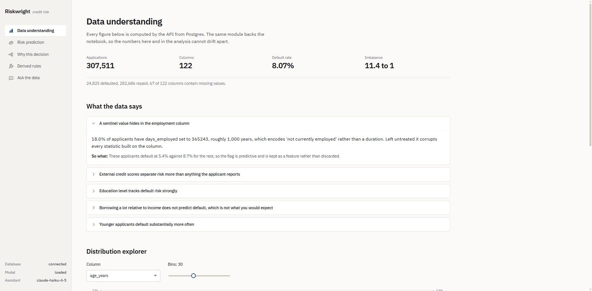
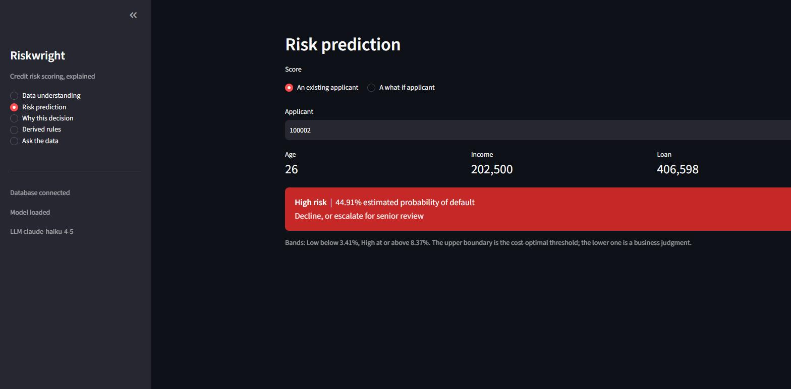
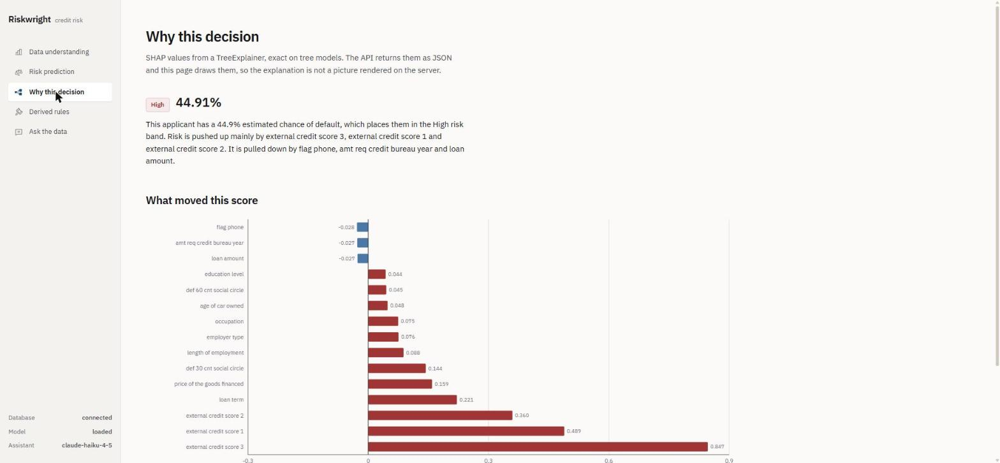
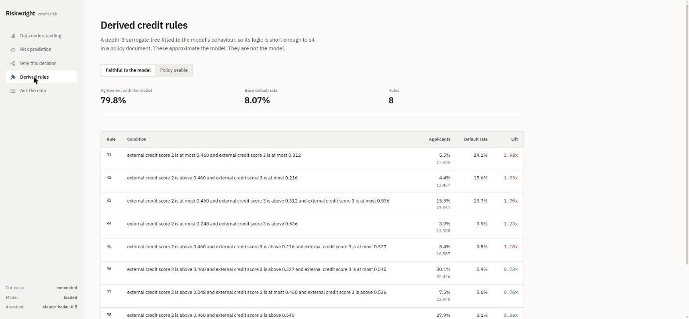
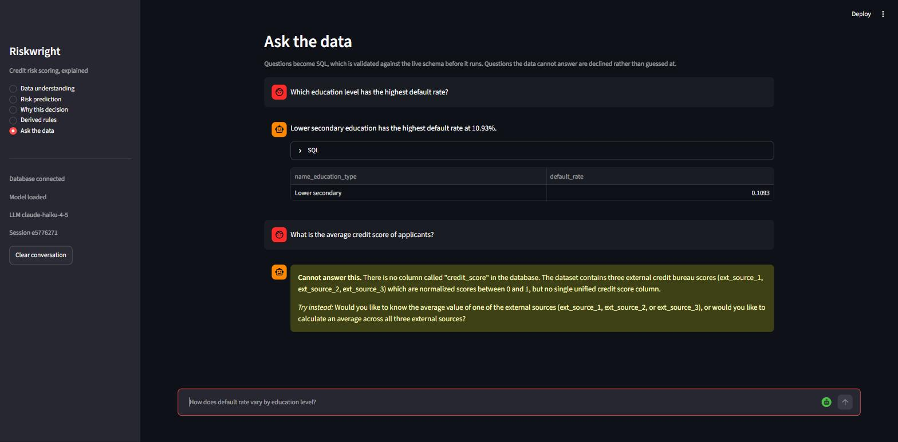

Riskwright
An AI-powered credit risk platform. Predicts default probability, explains every decision, derives credit policy rules, and answers plain-English questions about the data.
Home Credit Default Risk | 307,511 applications
| 8.07% default rate
| 120 features
NeoStats AI Engineer assignment
Architecture
All business logic in src/. The UI computes nothing.
- postgres — healthchecked
- loader — one-shot, idempotent
- api — waits on both
- frontend — waits on api health
No flags, no override file. Startup races are the usual reason a submission does not run on someone else's machine, so the dependency conditions are load-bearing rather than decorative.
From score to decision
Calibration first, then cost. The second is meaningless without the first.
Training with scale_pos_weight = 11.39
multiplies the predicted odds by that weight. An average applicant
scores near 0.5, not near 0.08.
A weighted 0.5 maps back to 1/(1+w) = 0.0807, the measured default rate. That identity is asserted in the test suite.
A false negative is a defaulted loan; a false positive is a good customer refused. Assumed 10:1. Threshold minimises 10·FN + FP.
| Threshold | Flagged | Recall | Precision | Cost |
|---|---|---|---|---|
| Naive 0.5 | 0.0% | 0.002 | 0.659 | 247,681 |
| Cost-optimal 0.0837 | 28.9% | 0.644 | 0.180 | 161,314 |
Catching 64.4% of defaulters instead of 0.2%. Expected cost down 34.9%.
Risk bands, and what they rest on
The two boundaries answer different questions, and one of them is an assumption.
| Boundary | Value | How it is set |
|---|---|---|
| t_high Medium/High | 0.0837 | Cost-optimal |
| t_low Low/Medium | 0.0341 | Business judgment |
Above t_high the expected cost of approving exceeds
the cost of refusing. Where automatic approval should stop is
a matter of review capacity, which nothing in the data answers, so
t_low is exposed as a policy dial rather than presented
as a computed result.
t_high moves 0.0407 to 0.2284 — a spread of 224% of the shipped value. Only 51.5% of applicants keep the same band across the range.
| Cost ratio | t_high | Approve | Caught |
|---|---|---|---|
| 3:1 | 0.2284 | 94.9% | 5,215 |
| 4:1 | 0.1874 | 91.5% | 7,465 |
| 5:1 | 0.1615 | 88.6% | 9,172 |
| 6:1 | 0.1218 | 81.9% | 12,316 |
| 8:1 | 0.1068 | 78.4% | 13,637 |
| 10:1 | 0.0837 | 71.1% | 15,979 |
| 12:1 | 0.0689 | 64.8% | 17,624 |
| 15:1 | 0.0561 | 57.8% | 19,182 |
| 20:1 | 0.0407 | 46.4% | 21,150 |
Every ratio still beats 0.5. The method survives where the number does not; what is uncertain is where to put the threshold, not whether 0.5 is wrong. It is.
Talk-to-data, measured like a model
44 held-out questions written after the prompt was frozen. Run five times.
Development set: 30/30. It was tuned on the failures it exposed, so its 100% is optimistic by construction.
A single run once scored 19/20 and was reported as the result. It was the best of five. Quoting the good draw is how an evaluation flatters itself, which is why this is now run five times and reported as a spread.
H35's reference counts ids in bureau
where the model joins to application_train first —
the model's reading is better. H36 asks it to exclude sentinel codes
the schema never identifies. Reported, not repaired: fixing a
reference after watching the model disagree is fitting the grader
to the outcome.
Refusing is a feature
Two independent mechanisms: a hard gate, and a sanctioned way to decline.
One model call returns an action: sql,
refuse, or clarify. A model with no
sanctioned way to say "I cannot" invents a column to fill the
silence.
Every generated statement is parsed, not string-matched. Single SELECT, whitelisted tables, columns checked against the live schema, LIMIT forced, 10s timeout, executed as a role holding SELECT and nothing else.
A DELETE hidden inside a CTE is rejected. The literal string 'Delete' is not. String matching gets both of these wrong; parsing the tree gets both right.
Querying a column that does not exist is impossible — a hard guarantee. Declining a question unanswerable from columns that do is a model judgement: over ten runs H8 declined seven times, and H44 answers a causal question as an association four times in five.
Fair lending
Five protected attributes excluded. One of them got back in anyway.
| Excluded | Protected basis |
|---|---|
| code_gender | Sex |
| name_family_status | Marital status |
| age_years | Age |
| cnt_children | Familial status |
| cnt_fam_members | Familial status |
ECOA names sex, marital status and age as protected bases. A model that prices or refuses credit on them is a legal failure however well it performs.
| Feature set | ROC-AUC | PR-AUC |
|---|---|---|
| With protected | 0.7651 | 0.2491 |
| Without (shipped) | 0.7614 | 0.2427 |
Cost of exclusion: 0.0037 ROC-AUC. There is no meaningful accuracy argument for keeping them.
15 features are a material proxy for at least one excluded attribute. Age is the worst: 12 material, 5 strong.
Systematic proxy detection
All 120 features scored against each excluded attribute.
Thresholds fixed in the module before the first run: material at 0.20, strong at 0.50. A cutoff chosen after seeing the ranking describes the output rather than judging it.
This scan would have missed
employed_life_ratio: it predicts age at only
0.074, far below the floor, yet
varying days_birth alone moves the score for 71.8% of
applicants who have a days_employed value and
0.0% of those who do not.
Hand-inspection found that one and none of the 12. Running both produced the full picture.
ext_source_1 reconstructs age at
0.600 and is the third most important
feature in the model. Excluding age here does not exclude it from
whatever the external bureau is scoring.
Fair lending: disparate impact
Every applicant scored, threshold 0.083669, approval rate 70.39%.
| Age band | n | Approved | Observed default |
|---|---|---|---|
| under 30 | 45,186 | 0.4873 | 0.1144 |
| 30-45 | 123,737 | 0.6807 | 0.0900 |
| 45-60 | 103,287 | 0.7698 | 0.0656 |
| 60+ | 35,301 | 0.8698 | 0.0492 |
| Attribute | 4/5 ratio | Result |
|---|---|---|
| code_gender | 0.8528 | PASS |
| age_band | 0.5602 | FAIL |
| name_family_status | 0.7885 | FAIL |
Below 0.8: age_band, name_family_status
Disparate impact in the legal sense requires a business-necessity analysis and a search for a less-discriminatory alternative. Neither is performed here. Observed default rates move with the approval rates, so the model tracks a real pattern through whatever it can reach — whether that justifies the disparity is exactly the analysis not done.
Adverse action reason codes
ECOA requires the specific principal reasons for a denial, not a score.
| # | Reason given to applicant 100002 | Driven by | SHAP |
|---|---|---|---|
| 1 | Credit assessment obtained from an external credit bureau | ext_source_1/2/3 | 0.847 |
| 2 | Length of the repayment term relative to the amount requested | credit_term | 0.221 |
| 3 | Value of the goods financed relative to the credit requested | amt_goods_price | 0.159 |
| 4 | Length of time in your current employment | days_employed | 0.088 |
A regulated disclosure must produce the same words for the same input, and a notice that cannot be reviewed before it is sent cannot be signed off. Four maximum, per Regulation B. Duplicates collapse — three bureau scores are one reason to an applicant. An applicant below the threshold gets no notice, and the reasons are not computed rather than computed and hidden.
Still SHAP attributions shaped as reasons, not a rule-based engine working from the credit policy. Some features are never disclosed at all — appointment timing, the geographic columns, and the social-circle columns that describe other people's conduct — and the response names what it withheld rather than dropping it silently.
Model selection
Two models, identical inputs, 5-fold stratified cross-validation.
| Model | ROC-AUC | PR-AUC |
|---|---|---|
| LightGBM (shipped) | 0.7614 ± 0.0026 | 0.2441 ± 0.0008 |
| Logistic regression | 0.7438 ± 0.0026 | 0.2181 ± 0.0031 |
LightGBM wins by 0.0176 ROC-AUC — real, being several times the fold standard deviation, but less than a headline would suggest. A logistic regression gets within 2.4% of a gradient-boosted ensemble on this data.
That is a finding, not a disappointment. Logistic regression is what banks deploy under regulatory pressure, because a coefficient per feature is auditable in a way an ensemble is not.
- SHAP TreeExplainer is exact and fast on trees
- Rule derivation is naturally a shallow tree
- NaN and categoricals handled natively, so no imputation
scale_pos_weight =
11.39, computed from each training split
rather than hardcoded. SMOTE was not used: at this row count it is
slow and addresses the same problem less directly. PR-AUC is
reported alongside ROC-AUC everywhere, because on a target this
imbalanced ROC-AUC alone flatters a model.
What the data says
Five insights, computed server-side and served from a single source.
18.0% of applicants have
days_employed set to 365243 — roughly 1,000 years.
It encodes "not currently employed" rather than a duration. Left
untreated it corrupts every statistic built on the column.
So what: those applicants default at 5.4% against 8.7% for the rest, so the flag is predictive and is kept as a feature rather than discarded.
- External credit scores separate risk more than anything self-reported
- Education level tracks default risk strongly
- Borrowing a lot relative to income does not predict default
- Younger applicants default substantially more often
Every figure here is computed by the same module the API and the notebook call, so the deck, the UI and the analysis cannot quote different numbers for the same finding.
Explainability
SHAP TreeExplainer. Exact on tree models rather than approximated.
Previously a 2,000-row sample, listed as a limitation. Recomputed over the whole population in chunks: the top 20 order is identical and the rank correlation across all 120 features is 0.9990.
That is a finding, not a null result: the sample was adequate, and every SHAP figure previously reported was already correct.
Endpoints return JSON, never a rendered image, so the UI owns presentation and the frontend stays replaceable. Each explanation carries a plain-English narrative generated deterministically from a label map — it cannot invent a reason the model did not use.
Derived credit rules
A depth-3 surrogate short enough to sit in a policy document.
| Rule | Condition | Applicants | Default rate | Lift |
|---|---|---|---|---|
| R1 | external credit score 2 is at most 0.460 and external credit score 3 is at... | 5.5% | 24.1% | 2.98x |
| R2 | external credit score 2 is above 0.460 and external credit score 3 is at m... | 4.4% | 15.6% | 1.93x |
| R3 | external credit score 2 is at most 0.460 and external credit score 3 is ab... | 15.5% | 13.7% | 1.70x |
| R4 | external credit score 2 is at most 0.248 and external credit score 3 is ab... | 3.9% | 9.9% | 1.23x |
| R5 | external credit score 2 is above 0.460 and external credit score 3 is abov... | 5.4% | 9.5% | 1.18x |
| R6 | external credit score 2 is above 0.460 and external credit score 3 is abov... | 30.1% | 5.9% | 0.73x |
The faithful set agrees with the model on 79.8% of applicants but keys almost entirely off external bureau scores, so it says little a credit officer can act on. The policy set excludes those scores: 71.4% agreement, and rules that still apply to an applicant with no bureau history.
A depth-3 surrogate tree approximating the model's behaviour. These are a readable approximation for credit policy, not the model itself, and the gap is where a rule-based decision would differ from a scored one. Leaf statistics are counted from the data rather than read off the tree's internal values, which are reweighted.
Engineering
Verified against a running stack, not asserted.
Four services. Postgres healthchecked; the loader
waits for healthy and the API waits for the loader to exit
successfully. Verified by cloning this repository into a fresh
directory and building with --no-cache.
The chatbot connects as a role holding SELECT on three tables and nothing else. Verified: INSERT, CREATE and DROP are all refused by Postgres. The LLM key is scoped to the api service and never reaches the UI container.
The validation gate, the train/serve skew guard, the calibration identity, path resolution, four-fifths arithmetic, proxy statistics, adverse action disclosure, and the API contracts — one of which feeds a row carrying every protected attribute through the real serving path and asserts none reaches a SHAP contribution.
The schema block is 1,656 tokens, not the ~6,000 a full dump would be. Caching is wired but measured not to engage: Haiku 4.5 needs a 4,096-token prefix. Confirmed by padding to 7,393 tokens and watching the cache write, then read.
What this is not
The limitations that would matter to someone deciding whether to trust it.
Two of three attributes fail the four-fifths screen and 15 features are material proxies for an excluded attribute. The screen, the proxy scan and the reason codes are built; the business-necessity analysis that would interpret them is not, nor is multivariate proxy detection or reject inference.
10:1 is an assumption. It is now a bounded one, and the bound is wide: only 51.5% of applicants keep their band across 3:1 to 20:1.
bureau and
previous_application serve the chatbot only. Prior
credit history is the largest improvement available, worth roughly
0.02–0.03 ROC-AUC in published work.
44 questions written by the person who wrote the prompt, and two of the failures are defects in those questions rather than model failures. An independently authored set is the next step.
The 176 tests cover src/ and the
app/ contracts. The React UI is verified by hand.
Conversation memory is in-process and dies on restart.
Data understanding
Dataset summary, the five insights, and the distribution explorer.

Risk prediction
Score with band and recommended action.

Why this decision
SHAP contributions and the plain-English narrative.

Derived rules
Both rule sets with support, default rate and lift.

Ask the data
Generated SQL is shown, not hidden.
